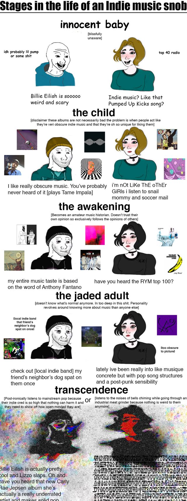

here, i will be posting my album reviews and albums of the week, hopefully regularly.
but let me first familiarise you with my music taste. relevant meme:
as i've mentioned (and will keep mentioning), my all-time favorites are Radiohead and Aphex Twin. i like electronica and post-rock — Björk, Sigur Ros, Massive Attack, Bon Iver and James Blake (dubstep?) being some of my favorite artistes from these genres.
i also really like Lana Del Rey and Fiona Apple; Norman Fucking Rockwell is my most listened-to album of all time. outside that, i worship Ye, and it is my long-standing opinion that Devil In A New Dress is tied with Kid A as the best album ever made.
anyway, if you want to get a sense of what i listen to in general, i think this playlist describes it fairly well:
the music sub-blog
here, i will be posting my album reviews and albums of the week, hopefully regularly. but let me first familiarise you with my music taste. relevant meme:

as i've mentioned (and will keep mentioning), my all-time favorites are Radiohead and Aphex Twin. i like electronica and post-rock — Björk, Sigur Ros, Massive Attack, Bon Iver and James Blake (dubstep?) being some of my favorite artistes from these genres.
i also really like Lana Del Rey and Fiona Apple; Norman Fucking Rockwell is my most listened-to album of all time. outside that, i worship Ye, and it is my long-standing opinion that Devil In A New Dress is tied with Kid A as the best album ever made.
anyway, if you want to get a sense of what i listen to in general, i think this playlist describes it fairly well: